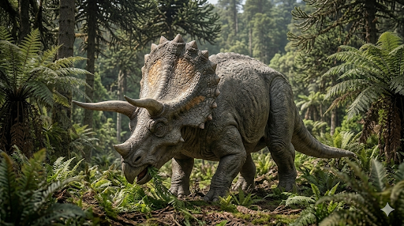

טריצרטופס
The Three-Horned Face: Triceratops horridus

תיק מחקר: נתונים אבולוציוניים משולבים
תקופת פעילות
לפני כ-68 עד 66 מיליון שנה
תור הקרטיקון המאוחר (גיל המאסטריכטי). חי עד להכחדת הקרטיקון-שלישון (K-Pg) שסיימה את עידן הדינוזאורים.
מסה ומשקל
6 עד 12 טונות
מבנה גוף מסיבי וכבד, בדומה לפיל אפריקאי גדול, נתמך על ידי ארבע רגליים חסונות במיוחד.
ממדים (אורך וגובה)
אורך 8 עד 9 מטרים
גובהו הגיע לכ-3 מטרים בכתפיים. כמעט שליש מאורכו הוקדש לגולגולת העצומה שלו.
מיקום גיאוגרפי
אמריקה הצפונית
נמצא בשפע בתצורות סלע במערב ארה"ב וקנדה (כמו תצורת הל קריק - Hell Creek Formation). חיו בסביבה שופעת צמחייה, יערות וביצות.
סיווג טקסונומי קריטי
דינוזאור צרטופסי (Ceratopsidae)
נציג מובהק ומוכר של "בעלי הפנים המקורננות". התאפיין בקרן קצרה על האף, שתי קרניים ארוכות מעל העיניים, ועטרת עצם עצומה (Frill) שהגנה על הצוואר או שימשה לתצוגה.
01 // ניתוח אטימולוגי נרחב
| החלק בשם | שפת מקור | פירוש ומשמעות היסטורית |
|---|---|---|
| Tri- | יוונית עתיקה (τρί- / tri-) | שלוש (Three) הוענק בשנת 1889 על ידי הפלאונטולוג עותניאל צ'ארלס מארש (O.C. Marsh). מתייחס למספר הקרניים שעיטרו את גולגולתו המסיבית של הדינוזאור. |
| -ceras | יוונית עתיקה (κέρας / keras) | קרן (Horn) מרכיב נפוץ בשמות משפחת הצרטופסיים. לטריצרטופס הייתה קרן אחת קצרה על האף (Nasal horn) ושתי קרניים ארוכות (עד מטר!) שצמחו מעל ארובות העיניים (Brow horns). |
| -ops | יוונית עתיקה (ὤψ / ops) | פנים (Face) הלחם השם המלא יוצר את המשמעות המוכרת: **"פרצוף בעל שלוש קרניים"**. |
| horridus | לטינית | מחוספס / נורא (Rough / Horrible) שם המין הנפוץ (T. horridus) ניתן בשל המרקם המחוספס מאוד של העצמות בגולגולת, אשר הצביעו ככל הנראה על כיסוי משמעותי של קרטין בחיי החיה. |
02 // תולדות הגילוי ומצב הממצאים (אוצרות הקרטיקון)
הטעות הראשונה: ה"ביזון הענק" (1887)
ההיסטוריה של הטריצרטופס התחילה בטעות משעשעת. באביב 1887, חוקר מצא סמוך לדנבר (קולורדו) זוג קרניים עצומות המחוברות לחלק העליון של גולגולת. הוא שלח את הממצא לפלאונטולוג הנודע **עותניאל צ'ארלס מארש**. כיוון שהאזור נודע במאובני יונקים, וכיוון שהקרניים דמו לקרני פר, מארש קבע בטעות שמדובר במין עצום ונכחד של **ביזון** (Bison alticornis). רק שנתיים לאחר מכן (1889), כאשר נמצאה גולגולת שלמה עם קרן שלישית על האף ומקור, מארש הבין שזהו דינוזאור והעניק לו את השם טריצרטופס.
מצב הממצאים וכמותם: שפע שאין שני לו
**כמות הממצאים:** הטריצרטופס הוא אחד הדינוזאורים המוכרים ביותר למדע. בניגוד לדינוזאורים הנדירים, **נמצאו מאות פרטים של טריצרטופס**. בתצורת "הל קריק" בארה"ב, הטריצרטופס הוא הדינוזאור הנפוץ ביותר בייתר (מהווה כמעט 40% מהמאובנים הגדולים שנמצאים שם). השפע הזה מאפשר לחוקרים לעקוב אחרי ה"אונטוגניה" שלו – כלומר, כיצד הוא גדל מתינוק לבוגר (קרני הגבות, למשל, התעקלו לאחור אצל הצעירים, והתיישרו קדימה אצל הבוגרים).
מצב הגולגולות ושלמות השלד (התשובות לתעלומות)
- האם נמצאה גולגולת שלמה? בהחלט כן, והמון! הגולגולת של הטריצרטופס היא אחת החזקות והמסיביות בטבע. בגלל המבנה המוצק שלה והעטרה הגדולה, היא שרדה את פגעי הזמן מצוין. **נמצאו עשרות גולגולות שלמות לחלוטין**. מדובר בגולגולת ענקית, מהגדולות מבין חיות היבשה: אורכה יכול להגיע ל-**2.5 מטרים**, כמעט שליש מאורך החיה כולה!
- האם נמצא מאובן שלם? (הפלא של "ליין") למרות שגולגולות נמצאות בשפע, שלדים פוסט-קרניאליים (כל מה שמאחורי הראש) נדירים יותר, כנראה בגלל שטורפים כמו טי-רקס נהגו לאכול את גוף החיה ולהשאיר את הראש המשוריין. עם זאת, התשובה היא **כן**. פריצת הדרך החשובה ביותר התרחשה בשנת 2012, עם גילוי השלד שזכה לשם **"ליין" (Lane)**. ליין הוא אחד הטריצרטופסים השלמים ביותר שנמצאו אי פעם (מעל 80%). אך מה שעשה את ליין למפורסם בעולם המדע אינו רק העצמות, אלא ה**עור המאובן**! יחד עם ליין נשתמרו דגימות נדירות של עור מאובן, שחשפו שלטריצרטופס היו קשקשים עצומים, דמויי משושים קשיחים (קצת כמו אצטרובלים או שריון של תנין), עם "זיפים" קוצניים שיצאו מחלקם.
אקולוגיה וביומכניקה: טנק קרניים חי
מבנה הגוף של הטריצרטופס (ראש נמוך, משקל מסיבי) מעיד על חיה שאכלה צמחייה נמוכה בעוצמה רבה.
תזונה (Herbivore) ומספריים בפה
הטריצרטופס ניזון מצמחייה נוקשה מאוד כמו ציקסים ושרכים (ואולי עצי דקל קטנים). הוא תלש את הענפים בעזרת **מקור קרני חסר שיניים** בקדמת פיו (בדומה למקור של תוכי ענק).
את העבודה השחורה עשו הלסתות האחוריות שלו, שהכילו סוללת שיניים (Dental battery) מורכבת מ-36 עד 40 עמודות של שיניים צפופות בכל צד. הלסתות שלו לא נעו מצד לצד (כמו של פרה), אלא זזו רק למעלה ולמטה – וחתכו את הצמחייה הקיצונית כמו **מספריים תעשייתיים לחיתוך פח**. מחקרי שחיקה הוכיחו שהשיניים הוחלפו ללא הרף לאורך כל חייו.
קרבות איתנים ומלחמת טי-רקס
**חידת העטרה (The Frill):** העטרה הגדולה בחלק האחורי של הגולגולת הייתה עשויה עצם מוצקה (בניגוד לצרטופסיים אחרים שהיו להם חורים בעטרה להפחתת משקל). במשך שנים נטען שזה היה מגן צוואר. כיום, מרבית החוקרים מסכימים (עקב מערכת כלי הדם הענפה בעצם) שהעטרה שימשה בעיקר ל**תצוגה (Display)**, כדי למשוך בנות זוג, להפחיד יריבים על ידי הזרמת דם שהאדימה אותה, ואולי לויסות חום.
**נשק קטלני:** הקרניים (שחלקן הקרני נרקב ולא השתמר במלואו במאובן, מה שאומר שהיו ארוכות וחדות יותר במציאות) שימשו להגנה. מצאו עדויות היסטוריות למאבקי פנים-אל-פנים: גולגולות טריצרטופס עם חורי ניקוב מקרניים של טריצרטופסים אחרים (כנראה במאבקי שליטה). כמובן, האויב האולטימטיבי שלו היה הטי-רקס. ישנן גולגולות וקרניים של טריצרטופס המראות סימני נשיכה קשים של טי-רקס *שהחלימו*, מה שמוכיח שהטריצרטופס לא היה טרף קל, והצליח לשרוד ולהדוף התקפות של טורף העל.